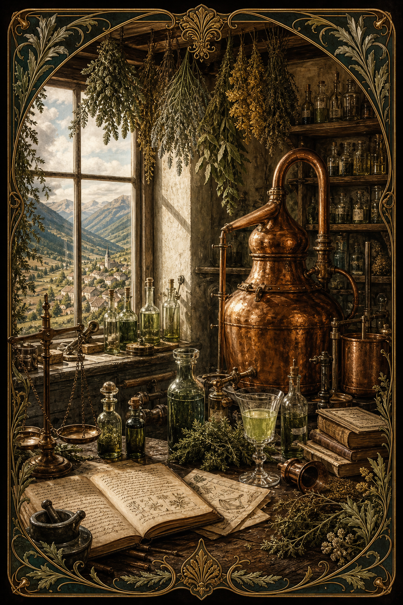
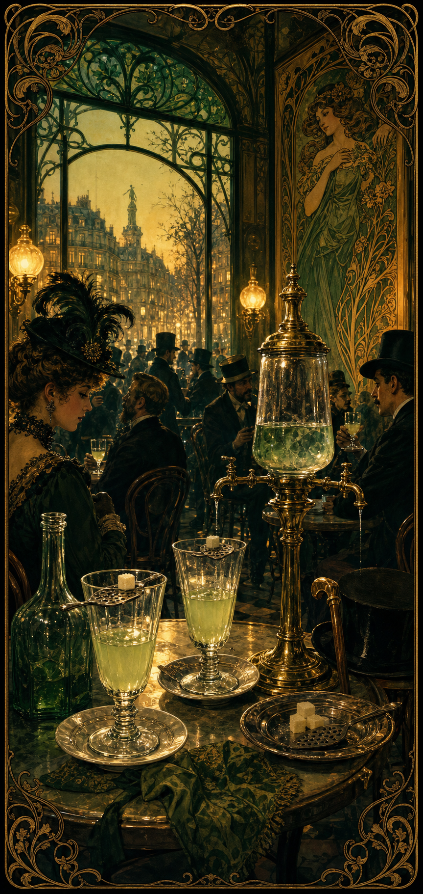
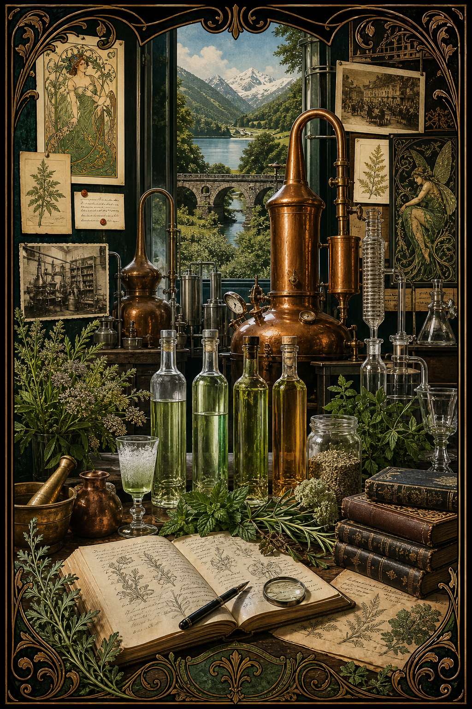

Timeline
The short version

Origins
From bitter medicine to named spirit
Long before absinthe became shorthand for bohemia, wormwood sat inside older medicinal traditions. Greek and Roman writers treated wormwood-based preparations as bitter remedies, and early modern herbalists continued to recommend the plant in digestive and tonic contexts.[2]
The late-18th-century Swiss origin story is part fact and part folklore. One version places the drink with Dr. Pierre Ordinaire in Couvet; another points to the Henriod family and domestic herbal preparations in the same region. What is better established is the commercial turn: in 1797 Henry-Louis Pernod and Major Dubied entered production using a recipe acquired through that Swiss network, giving absinthe a durable industrial identity.[1][3]

Belle Epoque
How absinthe became a Paris ritual
Absinthe’s rise in France had several engines at once. The French military encountered wormwood preparations in North Africa and helped normalize the drink at home. At the same time, high proof made it economical once diluted, and the late-19th-century phylloxera crisis damaged vineyards badly enough that many drinkers shifted habits while wine supplies were disrupted.[2]
By the late 19th century the drink had become inseparable from café ritual. At l'heure verte, drinkers gathered around fountains and prepared absinthe slowly with cold water, sometimes over sugar. Artists, writers, and illustrators helped turn the spirit into a visual symbol of Paris itself, but the ritual was never exclusive to the avant-garde; it spread across classes as the drink became more accessible.[2][3]
Phylloxera
Why the wine blight changed absinthe’s fate
Absinthe already had momentum before the great wine blight. French soldiers had acquired a taste for it in Algeria, and by the 1860s l'heure verte, the green hour, was already part of café ritual. But phylloxera hit French wine at exactly the wrong moment: vineyards were devastated, wine became scarcer and more expensive, cheap industrial alcohol became more available, and urban café life was expanding at the same time.[9][10]
That timing mattered. Absinthe already had a distinctive service identity, built around the glass, spoon, sugar, water drip, and louche. Once wine supplies were disrupted, absinthe was positioned to spread beyond a fashionable niche and become a major symbol of modern urban drinking culture. Historical work cited by later reviews describes a sharp rise in French absinthe consumption from 1875 to the early 20th century.[4][10]
Phylloxera did not invent absinthe culture, but it sharpened the contrast that later defined the political fight. Wine could be cast as natural, agricultural, and patriotic; absinthe as urban, industrial, high-proof, and socially suspicious. Once vineyards recovered through grafting onto resistant American rootstocks, wine interests had every reason to join temperance activists, doctors, journalists, and clergy in treating absinthe as a scapegoat for alcoholism, degeneration, and disorder.[4][10]
Styles
The classic varieties of absinthe
Historically, absinthe is anchored less by dozens of old style names than by a few recurring families. The most established distinction is between verte and blanche. Verte takes on its color through a secondary herbal coloration step after distillation, which also deepens the aroma. Blanche is bottled clear, without that green finishing maceration, and tends to present the distillate more directly.[7][8]
In Swiss usage, especially in Val-de-Travers, la Bleue became a familiar term for clear absinthe during the clandestine era. Despite the name, the spirit is not blue in the glass; the phrase points to a local history of transparent, uncoloured absinthe made under prohibition and passed quietly through regional networks.[7][8]
Beyond those historically rooted forms, many modern producers work in broader contemporary variations: barrel-aged expressions, unusual botanical accents, experimental proofing, and color-driven releases. These can be compelling, but they should not be confused with the classic core vocabulary that shaped absinthe’s older identity.[8]
Our Line
How Nowhere fits into that history
Verte is the most direct historical gesture in the line. It belongs openly to the green absinthe tradition: coloured, layered, herbal, and built to louche with the classic wormwood-anise- fennel spine.[7]
Bleue is grounded in the Swiss clear style, especially the Val-de-Travers lineage of blanche and la bleue absinthes. Its role in the collection is not novelty but restraint: the clear, uncoloured side of the category.[7][8]
Crimson and Detour should be understood differently. They are not presented as lost 19th-century archetypes. They are modern house interpretations built on absinthe technique and ritual: one moving toward floral red drama, the other toward citrus-resin transformation and color play. Their legitimacy comes from respecting the structure of absinthe while admitting that they extend the tradition rather than merely reproduce it.
Prohibition
The ban was political as much as medical
Absinthe’s fall is often reduced to one molecule, one scandal, or one deranged generation of artists. The actual story is messier. The 1905 Lanfray murders in Switzerland became a catalytic media event, but even contemporary observers knew the killer had consumed large quantities of many forms of alcohol, not absinthe alone. The press nevertheless turned the crime into a perfect anti-absinthe parable.[2]
Doctors, temperance activists, newspapers, and wine interests all had reasons to isolate absinthe as a cultural enemy. A Swiss referendum approved prohibition in 1908, the ban took effect in 1910, and France followed in 1915. The drink had become a vessel for anxieties about class disorder, degeneration, industrial adulteration, and national decline.[1][2][3]
Myth
The Green Fairy and the problem of absinthism
The great myth of absinthe is that it was uniquely hallucinogenic and uniquely capable of driving people into madness. Modern review literature has treated “absinthism” as a historically exaggerated or fictitious syndrome, arguing that high alcohol intake, poor-quality industrial spirit, and occasional adulterants explain far more than the old Green Fairy mythology does.[4][5]
That does not make pre-ban absinthe harmless; it was and is a strong spirit. But it does mean the familiar image of a chemically singular psychedelic drink is not well supported. What survived prohibition was not just the liquid itself but the much bigger story wrapped around it.[1][4][5]

Revival
The return of the spirit
Absinthe never vanished completely. It survived in Spain, in scattered export production, and in the clandestine stills of Val-de-Travers. When restrictions softened in the late 20th century, distillers and researchers revisited pre-ban formulations and found that the old chemical folklore had outgrown the evidence.[2][5]
Switzerland legalized absinthe again in 2005, bringing long-hidden family and regional practices back into the open. Today the spirit is no longer just an outlaw legend; it is a living category again, one that sits somewhere between historical reconstruction, regional identity, and modern craft distilling.[2][6]